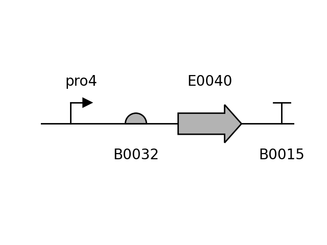
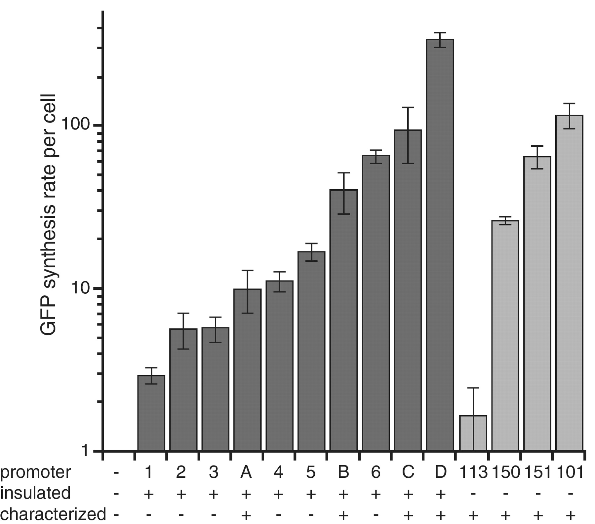
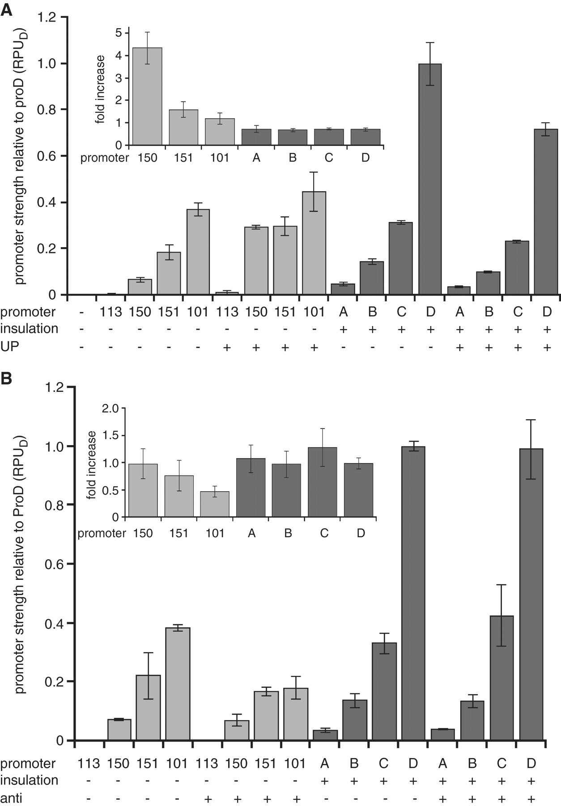
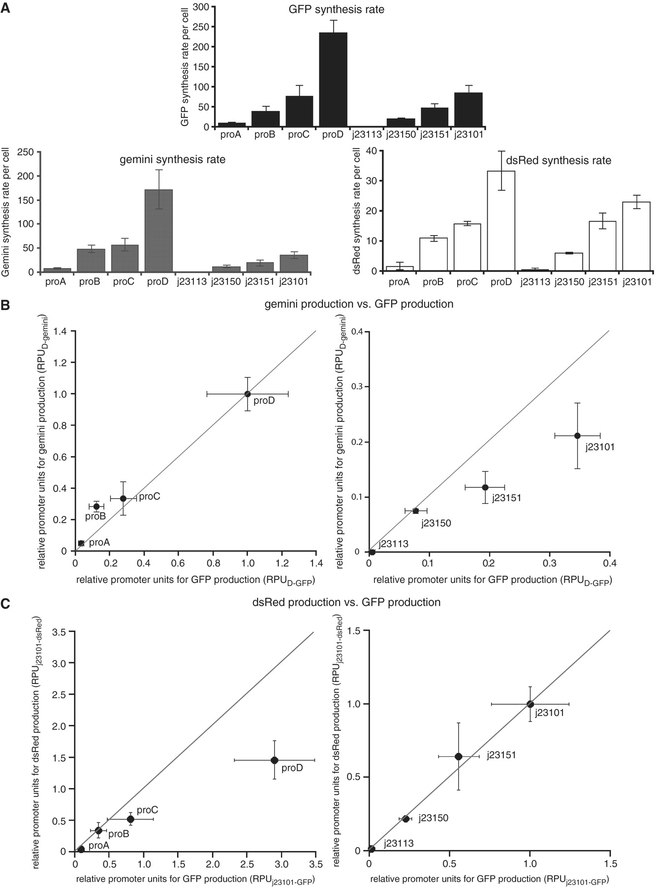

proD-derived Promoter (weak)
pro4
Data
| Parameter | Value | Unit |
|---|---|---|
| Strength | 0.096 | RPU |
| Strain | DH5α |
|---|---|
| Plasmid | pSB3C5 |
| ori | p15A |
| Resistance | Clo |
Circuit Context
(better resolution)
Description
Part of a library of long constitutive promoters created by variotion on the sequence of E. coli 's rrnB P1. The promoters contain 'insulator' sequences upstream and downstream (-105 to +55) of the promoter core (-35 to -10). The addition of these sequences insulate promoter strength from the neighbouring genetic context, leading to more predictable gene expression measurements.
Characterization
Parts were characterized on E. coli DH5α in LB broth at 37 °C in 96-well plate reader assays. GFP and Gemini measurements on this collection were normalized by the activity of the promoter proD. dsRed measurements on this collection were normalized by the activity of the promoter J23101.
Insulation
A subset of this library's promoters (proA, proB, proC, proD) were chosen to test the insulation provided by the upstream and downstream elements. Expectedly, the insulated promoters demonstrated more robust expression with different genetic contexts (UP element or upstream anti-sequence) and ORFs (Gemini and dsRed).
 Sequences
Promoter
ttctagagCACAGCTAACACCACGTCGTCCCTATCTGCTGCCCTAGGTCTATGAGTGGTTGCTGGATAACTTTACGGGCATGCATAAGGCTCGGATGATATATTCAGGGAGACCACAACGGTTTCCCTCTACAAATAATTTTGTTTAACTTTtactagag
Reference
Davis, J. H., Rubin, A. J. & Sauer, R. T. Design, construction and characterization of a set of insulated bacterial promoters. Nucleic Acids Res. 39, 1131–1141 (2011).
https://doi.org/10.1093/nar/gkq810Extra References and External Links
EXTRA READING